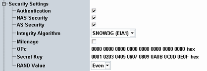

The "Security Settings" configure parameters related to the authentication procedure and other security procedures.

Enables or disables authentication, to be performed during the attach procedure. Authentication requires a test USIM. An appropriate 3GPP USIM can be obtained from Rohde & Schwarz (R&S CMW-Z06, stock no. 1209.2010.02).
Remote command:Enables or disables non-access stratum (NAS) security. With enabled NAS security, the UE uses integrity protection for NAS signaling. This setting is only relevant if authentication is enabled.
Remote command:Enables or disables access stratum (AS) security. With enabled AS security, the UE uses integrity protection for RRC signaling. This setting is only relevant if authentication is enabled.
Remote command:Selects an algorithm for integrity protection. NULL means that integrity protection is disabled. Use this setting for UEs which do not support the SNOW3G (EIA1) algorithm.
Remote command:Enable this parameter to use a USIM with MILENAGE algorithm set.
Remote command:The key OPc is used for authentication and integrity check procedures with the MILENAGE algorithm set (parameter "Milenage" enabled). The value is entered as 32-digit hexadecimal number.
Remote command:The secret key K is used for the authentication procedure (including a possible integrity check). The value is entered as 32-digit hexadecimal number.
The integrity check fails unless the secret key is equal to the value stored on the test USIM of the UE. The test USIM R&S CMW-Z06 is compatible with the default setting of this parameter.
If authentication is switched off, the secret key is ignored.
Remote command:The random number RAND is used for the authentication procedure (including a possible integrity check). This parameter selects whether an odd or even RAND value is used.
Remote command: